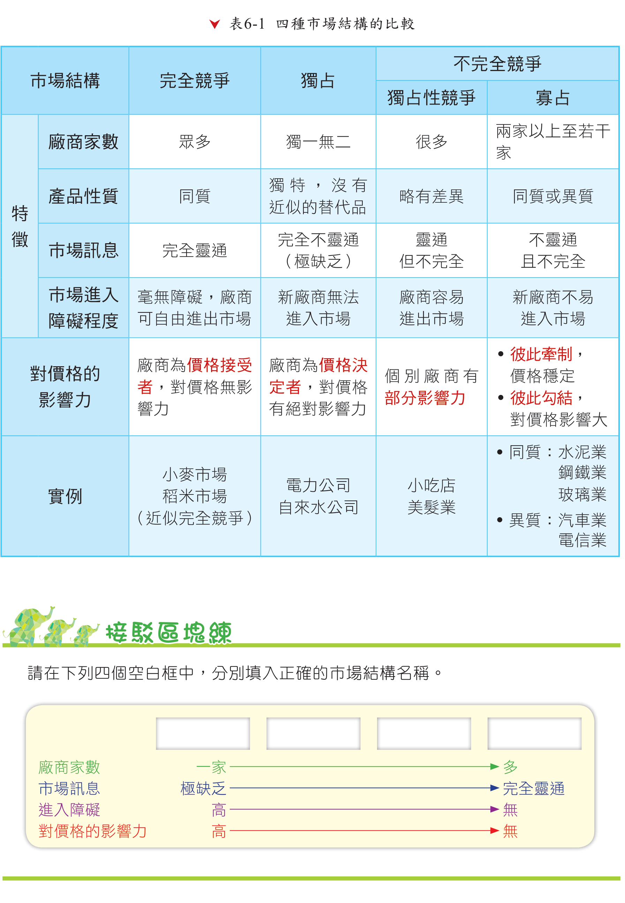
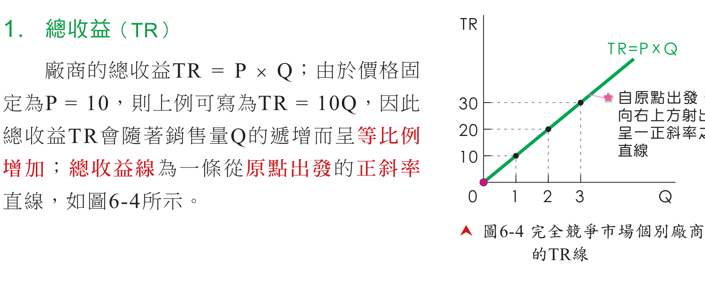
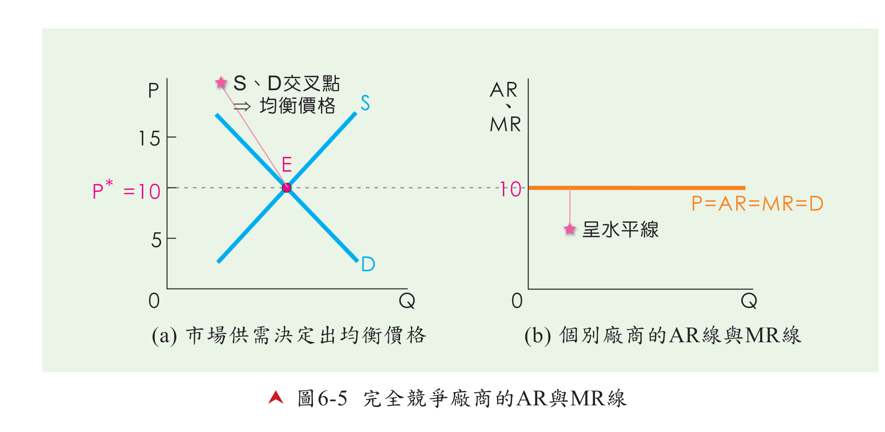

🏛️ 重點一：四大市場結構類型與特徵比較
課本 6-1 節 ｜ 市場競爭光譜全景
🌐 經濟學上「市場（Market）」的定義：
市場並非指「特定的實體交易場所」，而是以「某項特定產品」來界定。只要有生產該產品的賣方，以及有意購買該產品的買方所形成的集合，即構成市場（如網路電商市場、白米市場、股票市場）。
市場並非指「特定的實體交易場所」，而是以「某項特定產品」來界定。只要有生產該產品的賣方，以及有意購買該產品的買方所形成的集合，即構成市場（如網路電商市場、白米市場、股票市場）。

▲ 教科書 P.178 圖 6-1：四種市場結構之廠商家數與對價格的影響力光譜
四大市場結構特徵速記（依競爭激烈程度排序）：
- 1. 完全競爭市場（Perfect Competition）：
• 買賣者眾多、產品完全同質無差異、進出市場完全自由、訊息完全靈通。
• 廠商為「價格接受者（Price Taker）」，對市價毫無影響力！實例：散裝白米、農產品。 - 2. 獨占性競爭市場（Monopolistic Competition）：
• 廠商眾多、產品異質（有品牌/包裝/口味差異）、進出容易。
• 重視「非價格競爭」（廣告、促銷、贈品、售後服務）。實例：手搖飲、餐廳、牙膏、服飾店。 - 3. 寡占市場（Oligopoly）：
• 少數幾家大型廠商控制市場、廠商間相互依存度極高、進出障礙高。
• 價格具僵固性（拗折需求線）、多採非價格競爭。實例：電信三雄、水泥、汽車、國產泡麵（統一/維力）。 - 4. 獨占市場（Monopoly）：
• 獨家生產、無近似替代品、進出障礙極高、廠商為「價格決定者（Price Maker）」。
• 形成原因：自然獨占（規模經濟、台電台水）、專利權/法律限制（新藥）、政府特許（台灣菸酒）、關鍵資源獨占。
四種市場結構完整綜合比較（課本核心大表）

▲ 教科書 P.184 表 6-1：四種市場結構之廠商家數、產品性質、進出障礙、價格影響力與非價格競爭綜合對照表
💵 重點二：廠商收益三大指標（TR、AR、MR）
課本 6-2 節 ｜ 收益分析基礎| 收益指標 | 英文縮寫 | 計算公式 | 核心觀念與幾何意涵 |
|---|---|---|---|
| 總收益 | TR (Total Revenue) | TR ＝ P × Q | 廠商銷售一定量產品所獲得的全部營業收入。 |
| 平均收益 | AR (Average Revenue) | AR ＝ TR / Q ＝ (P × Q) / Q ＝ P | 平均每銷售一單位產品所得之收入。極重要結論：AR 恆等於產品價格 P，故 AR 曲線就是廠商面對的「需求曲線（D）」！ |
| 邊際收益 | MR (Marginal Revenue) | MR ＝ ΔTR / ΔQ | 每多銷售 1 單位產品，所引起總收益的增加量（TR 曲線的切線斜率）！ |
⚖️ 重點三：完全競爭廠商的需求曲線與「四線合一」
課本 6-3-1 節 ｜ 價格接受者的收益特徵1. 個別廠商為價格接受者（Price Taker）：
- 完全競爭市場中，市場價格由全體「市場供需」相交決定（市價為 P*）。
- 個別廠商產量佔全市場比例微不足道，只能被動接受該市價，多賣或少賣皆不能改變價格。
🌟 「四線合一」黃金鐵律：
個別完全競爭廠商面對的需求曲線為「一條水平線」（彈性 Ed ＝ ∞）：
個別完全競爭廠商面對的需求曲線為「一條水平線」（彈性 Ed ＝ ∞）：
P ＝ AR ＝ MR ＝ D
每多賣一單位，價格都不變，故每單位的邊際收益 MR 永遠等於價格 P！
- 總收益（TR）線： 因為價格 P 固定，總收益隨銷售量呈等比例增加，為一條由原點出發、向右上方傾斜的直線（射線），其斜率即為市價 P！

▲ 教科書 P.189 圖 6-4：完全競爭廠商之 TR 線（由原點出發之正斜率射線）

▲ 教科書 P.189 圖 6-5：市場供需決定價格 ➔ 個別廠商 P = AR = MR = D 四線合一水平線
📉 重點四：獨占及不完全競爭廠商之需求曲線與「斜率 2 倍」
課本 6-3-2 節 ｜ 價格決定者的收益幾何
▲ 教科書 P.191 圖 6-6：不完全競爭廠商的 TR 拋物線、AR 需求線與 MR 關係圖
1. 面對負斜率需求曲線：
- 獨占、寡占、獨占性競爭廠商為價格決定者（Price Maker），若想多賣產品，就必須降價銷售！
- 因此廠商面對的需求曲線是一條向右下方傾斜的負斜率曲線（AR ＝ D）。
📐 MR 平分橫軸與「斜率 2 倍」幾何鐵則：
若需求曲線為直線方程式：
若需求曲線為直線方程式：
需求曲線（AR）：P ＝ a － bQ
則邊際收益曲線方程式為：
邊際收益（MR）：MR ＝ a － 2bQ
- 縱軸截距相同： AR 與 MR 皆從同一縱軸截距 a 出發。
- 斜率為 2 倍： MR 位於 AR 下方，其下降速度是 AR 的 2 倍！
- 平分水平線段： MR 穿過橫軸的點，剛好平分 AR 線穿過橫軸截距點的一半（QMR=0 ＝ ½ QAR=0）。
- TR 曲線形態： 總收益先上升後下降，呈倒 U 字形拋物線！
🎯 重點五：收益與需求價格彈性（Ed）之三大連動律
課本 6-3 節 ｜ 統測 100% 必考壓軸公式
📐 阿莫羅索-羅賓遜定理（Amoroso-Robinson Formula，課本公式 6-4）：
MR ＝ P × ( 1 － 1Ed )
此公式揭示了邊際收益 MR、價格 P 與需求價格彈性 Ed 之間的絕對連動！
| 需求價格彈性（Ed） | 邊際收益（MR）正負 | 總收益（TR）走勢 | 廠商定價決策（降價結果） |
|---|---|---|---|
| Ed ＞ 1（富有彈性） | MR ＞ 0（正值） | TR 遞增（上升段） | 降價使 TR 增加（薄利多銷！需求量增加比例大於降價比例）。 |
| Ed ＝ 1（單一彈性） | MR ＝ 0（穿過橫軸） | TR 達到歷史最大值！（頂點） | 總營業額最高峰！價格變動不影響 TR。 |
| Ed ＜ 1（缺乏彈性） | MR ＜ 0（負值，跌入第四象限） | TR 遞減（下滑段） | 降價使 TR 減少（不宜降價！如穀賤傷農）。此時漲價反而使 TR 增加！ |
🎯 模組六：CH6 課本精選 5 大經典實戰測驗
課本 P.194～196 原題驗證1. 【課本 P.194 第 3 題】以下何種市場結構的個別廠商，對市場價格「完全沒有影響力」，只能被動成為價格接受者？
🎉 答對了！選 (A)
在完全競爭市場中，買賣雙方人數極多且產品完全同質，個別廠商的供給量佔全體比例微不足道，為價格接受者（Price Taker），對市價完全沒有任何決定或影響的能力！
在完全競爭市場中，買賣雙方人數極多且產品完全同質，個別廠商的供給量佔全體比例微不足道，為價格接受者（Price Taker），對市價完全沒有任何決定或影響的能力！
2. 【課本 P.194 第 10 題】在現實經濟中，自來水公司、電力公司等形成「自然獨占（Natural Monopoly）」的最主要原因為何？
🎉 答對了！選 (C)
自然獨占是因為初期鋪設管線、輸電電網等固定資本極其龐大，產量愈大、長期平均成本 LAC 愈低，具有極顯著的規模經濟。由單一家廠商供應全市場的成本，遠低於多家廠商重複投資競爭的成本！
自然獨占是因為初期鋪設管線、輸電電網等固定資本極其龐大，產量愈大、長期平均成本 LAC 愈低，具有極顯著的規模經濟。由單一家廠商供應全市場的成本，遠低於多家廠商重複投資競爭的成本！
3. 【課本 P.195 第 12 題】假設某廠商的總收益（TR）隨銷售量增加呈「等比例變動」（即 TR 是一條由原點出發的正斜率直線），則該廠商屬於何種市場結構？
🎉 答對了！選 (A)
完全競爭廠商為價格接受者，市價 P 恆為固定常數，故 TR ＝ P × Q 是一條由原點出發的直線（正斜率射線），總收益隨銷售量 Q 等比例增加！不完全競爭廠商的 TR 則為倒 U 字形拋物線。
完全競爭廠商為價格接受者，市價 P 恆為固定常數，故 TR ＝ P × Q 是一條由原點出發的直線（正斜率射線），總收益隨銷售量 Q 等比例增加！不完全競爭廠商的 TR 則為倒 U 字形拋物線。
4. 【課本 P.195 填充計算第 3 題】已知某不完全競爭廠商的邊際收益函數為 MR ＝ 80 － 4Q，平均收益（需求）函數為 AR ＝ 80 － 2Q。請問該廠商欲達到「總收益（TR）最大」時，銷售量 Q 與最大總收益分別為多少？
🎉 答對了！選 (B)
• 求 TR 最大的條件：令 MR ＝ 0！
• 80 － 4Q ＝ 0 ➔ 4Q ＝ 80 ➔ Q ＝ 20 單位。
• 當 Q ＝ 20 時，產品單價 P ＝ AR ＝ 80 － 2(20) ＝ 40 元。
• 最大總收益 TR ＝ P × Q ＝ 40 × 20 ＝ 800 元！
• 求 TR 最大的條件：令 MR ＝ 0！
• 80 － 4Q ＝ 0 ➔ 4Q ＝ 80 ➔ Q ＝ 20 單位。
• 當 Q ＝ 20 時，產品單價 P ＝ AR ＝ 80 － 2(20) ＝ 40 元。
• 最大總收益 TR ＝ P × Q ＝ 40 × 20 ＝ 800 元！
5. 【課本 P.196 生活情境第 2 題】台灣國產泡麵市場上，各種口味與包裝不斷推陳出新，但主要品牌卻只有統一、維力、味丹等少數幾家大公司主導市場。由此判斷國產泡麵市場最符合下列哪一種市場型態？
🎉 答對了！選 (B)
市場由「少數幾家大型廠商主導」，且各廠商品牌彼此高度重視對手反應、互相牽制，此為典型寡占市場（Oligopoly）的特徵！
市場由「少數幾家大型廠商主導」，且各廠商品牌彼此高度重視對手反應、互相牽制，此為典型寡占市場（Oligopoly）的特徵！